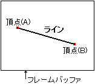

ビット |
15 | 14 | 13 | 12 | 11 | 10 | ９ | ８ |
７ | ６ | ５ | ４ | ３ | ２ | １ | ０ |
|---|
CMDCTRL
+00 |
0 | JP | 0 | 0 | 0 | 0 | 0 | 0 | 0 | 0 | 0 | 1 | 1 | 0 |
|---|
CMDLINK
+02 |
LINK指定/8H | 0 | 0 |
CMDPMOD
+04 |
MO | 0 | 0 | 0 | Pc | Cl | Cm | Me | 1 | 1 | 0 | 0 | 0 | 色演算 |
|---|
CMDCOLR
+06 |
ノンテクスチャカラー |
|---|
| +08 | |
| +0A | |
CMDXA
+0C |
符号拡張 | 頂点(A)，Ｘ座標(XA) |
CMDYA
+0E |
符号拡張 | 頂点(A)，Ｙ座標(YA) |
CMDXB
+10 |
符号拡張 | 頂点(B)，Ｘ座標(XB) |
CMDYB
+12 |
符号拡張 | 頂点(B)，Ｙ座標(YB) |
| +14 | |
| +16 | |
| +18 | |
| +1A | |
CMDGRDA
+1C |
グーローシェーディングテーブル/8H |
|  |